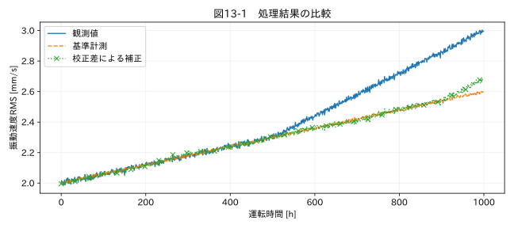

第IV部 センサーデータ特有の問題 / 第13章
この章の節
センサーのゼロ点ずれとドリフト
学習目標
オフセットと感度の誤差を分け、校正情報から補正する。測定系の変化と製品の劣化を混同せず、補正の適用範囲と不確かさを説明する。
13.1 振動が増えたのは製品かセンサーか
耐久試験の振動速度RMSが時間とともに増えた。軸受が劣化したのか、センサーの感度が変わったのか、取付状態が緩んだのか。単一の値の列からは、これらを一意に分離できない。直線トレンドを引けば平らになるが、製品劣化を消している可能性がある。
教材 06_durability.csv は、真の振動速度が1時間あたり0.0006 mm/s増える設定である。500時間を超えると、さらにセンサー由来の0.0008 mm/s/hのずれを加えた。独立の基準計測 reference を用意している。これは原因を分けるための教育用条件であり、実務では基準計測の精度と独立性も検証する。
13.2 校正式を立てる
表示値zを真の入力xに対して z = a x + b + ε とする。aが感度、bがオフセット、εが残差だ。補正は x̂ = (z−b)/a となる。ゼロ入力だけの確認ではbを推定できても、aは決まらない。少なくとも二つの異なる既知入力が必要であり、実際は測定範囲全体で複数点を使って非線形性も確認する。
校正点が0 MPaで0.02 MPa、2 MPaで2.06 MPaなら、a=(2.06−0.02)/2=1.02、b=0.02である。表示1.55 MPaは(1.55−0.02)/1.02=1.5 MPaへ補正される。測定対象の平均をゼロへ寄せる操作は、この校正とは異なる。
13.3 温度ドリフトと長期ドリフト
環境温度Tに対するオフセットを b(T)=b₀+k(T−T₀) と近似することがある。ただし温度を測定した位置、応答遅れ、ヒステリシスによって残差が変わる。温度依存性の確認に使った範囲を超えた補正は外挿である。長期ドリフトも、いつでも直線で進むとは限らない。
本章では100時間ごとの基準との差から補正量を作る。図13-1の補正後にも真の劣化傾向が残ることが重要だ。最後の校正点より後では np.interp が最後の値を保持するため、ドリフトを追い切れない。この例は限界を含めて学ぶためのもので、終端を有効な補正範囲と無条件に認めない。
関連する詳細実験は実践補講に掲載。入力形式・同期・補間・校正・多変量・チャンク境界を扱う。
実行するコードと結果
run.py · 共通処理の全ソース
教材フォルダで python examples/chapter13/run.py を実行。以下は省略のないスクリプト。共通モジュールは教材一式に含む。
from pathlib import Path
import sys
ROOT=Path(__file__).resolve().parents[2]
sys.path.insert(0,str(ROOT))
sys.path.insert(0,str(ROOT/'examples'))
import numpy as np
import pandas as pd
from common import load,truth,seconds,plot
from tsclean.core import numeric,timestamps,time_flags,hampel,freeze_candidates,interpolate_short,compare
df=load('06_durability');h=seconds(df)/3600;x=df['測定値'];ref=df.reference
drift=x-ref
# 既知の定期校正点を模した100時間間隔の差分。製品の傾きは除去しない。
anchors=np.arange(0,len(x),100);estimate=np.interp(h,h[anchors],drift.iloc[anchors]);y=x-estimate
print('原観測の傾き:',np.polyfit(h,x,1)[0],'補正後:',np.polyfit(h,y,1)[0],'真の劣化傾き:0.0006 mm/s/h')
print('終端の校正点外は外挿相当の保持となるため別途確認が必要。')
plot(13,h,{'観測値':x,'基準計測':ref,'校正差による補正':y},'振動速度RMS [mm/s]',xlabel='運転時間 [h]')
検証環境での実行結果を開く
原観測の傾き: 0.0009999166903222727 補正後: 0.0006263793569968158 真の劣化傾き:0.0006 mm/s/h
終端の校正点外は外挿相当の保持となるため別途確認が必要。

13.4 補正の不確かさ
x̂=(z−b)/a について、z、b、aの小さな不確かさを一次近似で伝播させる。独立と仮定すると、u²(x̂) ≈ u²(z)/a² + u²(b)/a² + (z−b)²u²(a)/a⁴ となる。aとbを同じ校正データから推定すれば相関が生じるので、厳密には共分散項も加える。独立という仮定を省略しない。
基準器の不確かさ、校正再現性、環境差、補正モデルの残差を含める。基準との差が0になっても不確かさが0になったわけではない。補正前後の値だけでなく、適用した校正式、校正日、校正証明の識別子、適用範囲を保存する。
13.5 判別できない場合の扱い
基準器がない場合、他のセンサー、製品の状態観察、試験前後校正から仮説を絞れることはある。しかし共通の温度ドリフトを持つセンサー二つが一致しても、独立の証拠とは限らない。信頼できる基準がないなら、補正をせず「原因未確定の傾向」と報告する選択がある。
演習
基礎演習
補正前後の傾きを真の0.0006 mm/s/hと比較する。
応用演習
上の2点校正で、表示2.06 MPaを補正する。感度誤差を無視して0.02だけ引く場合との差も求める。
実務演習
全センサーが同じ恒温槽内で同じ方向にずれた。平均を引いて補正してよいか。
演習解答・解説を表示する
基礎：補正後は真の劣化傾向に近づくが、校正点のノイズと終端の補正不足が残る。平らにすることが正解ではない。
応用：正しくは2.0 MPa。オフセットだけ引くと2.04 MPaになり、感度誤差が残る。
実務：槽の実温度変化か共通測定系の変化かを分離できていない。独立の温度基準や試験前後校正を確認する。平均差を引く根拠にはならない。
章末まとめ
補正は基準に結び付けて行う。トレンドをなくすことではなく、測定対象の変化を保持したまま測定系の偏りを扱うことが目的である。